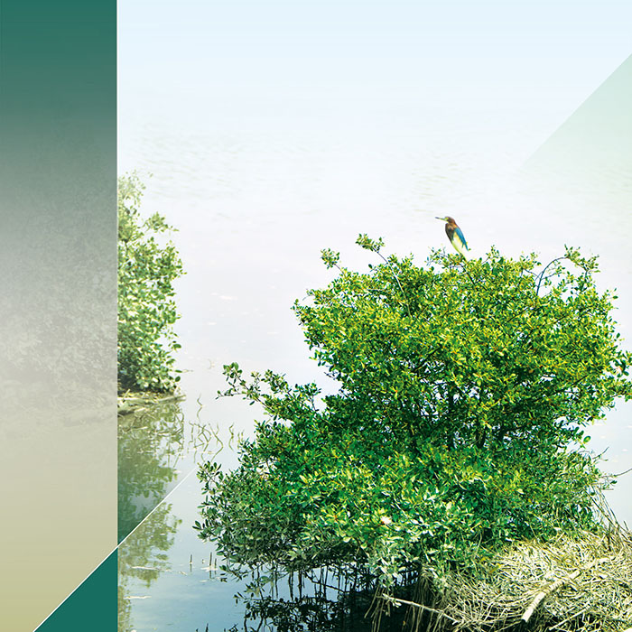
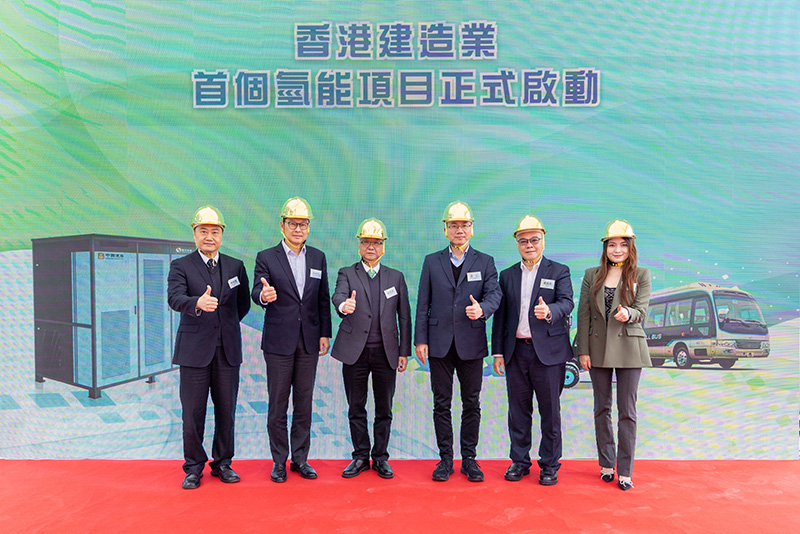

CSHK is committed to implementing environmentally sustainable low-carbon construction solutions. Our primary focus lies in advancing the innovation and application of low-carbon engineering technologies to drive sustainable development across all phases including planning, design, construction, operation, and maintenance. During the year, we have proactively implemented various initiatives to promote carbon neutrality and green construction practices, alongside promoting digital transformation and industrial enhancement to achieve a comprehensive green construction approach spanning from design to daily operations.
The First Hydrogen Energy Project in Hong Kong's Construction Industry

(From left to right) Lin Huai-guang (Deputy General Manager of Sinopec (Hong Kong) Petroleum Holding Company Limited), Tang Wai-yung* (鄧維勇) (Chief Project Development Officer of Hong Kong- Shenzhen Innovation and Technology Park Limited, Tse Chin-wan (Secretary for Environment and Ecology of Hong Kong), Huang Jiang (Executive Vice President of China State Construction Engineering (Hong Kong)), Poon Kwok-ying (Director of Electrical and Mechanical Services Department of Hong Kong), Cynthia Zhu (Chief Executive Officer of Hong Kong Nation-synergy International Hydrogen Power Technology Co., Limited)
As an industry pioneer, we are making a solemn commitment to "actively explore the first hydrogen energy application pilot in the Hong Kong construction industry and introduce hydrogen energy as one of the energy supplies on the construction site." This strategic initiative not only demonstrates our concrete efforts in addressing climate change but also highlights our firm determination to lead the industry towards a low-carbon future. The three major carbon reduction commitments we proposed serve as crucial steps towards achieving sustainable development objectives and reflect the Company's leadership in the field of clean energy applications.
In 2024, CSHK successfully obtained approval to deploy hydrogen power generators at the Science and Technology Park construction site project, marking a milestone breakthrough. As the pioneering utilization of hydrogen power generation equipment in the construction sector, it sets an innovative benchmark for the industry.
Green Building Materials and Technologies
In our efforts to advance sustainable development in the construction sector, the application of green building materials and the integration of innovative technologies have emerged as crucial components in achieving environmental protection objectives. CSHK is committed to integrating sustainable materials with advanced construction technology, comprehensively enhancing the environmental performance of buildings throughout their entire lifecycle from inception to operation by optimizing resource efficiency, minimizing carbon footprints, and improving construction efficacy. Through tangible initiatives, we demonstrate synergy between environmental protection and operational efficiency, setting a benchmark for sustainable construction in the industry.